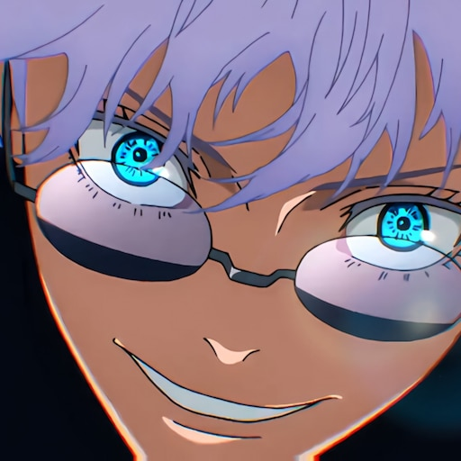

The Honored One
Satoru Gojo est l'un des personnages les plus puissants et charismatiques de "Jujutsu Kaisen". En tant qu'enseignant à l'école d'exorcisme de Tokyo, il se distingue non seulement par ses compétences inégalées mais aussi par son approche unique et insouciante des combats contre les malédictions.
Grand et mince, avec des cheveux blancs et des yeux d’un bleu perçant souvent cachés derrière un bandeau ou des lunettes noires.
Gojo possède une personnalité complexe. Bien qu'il puisse sembler insouciant et arrogant, cette attitude cache un dévouement profond pour ses amis et ses élèves. Il est connu pour son humour unique et son attitude décontractée, tout en étant extrêmement protecteur envers ceux qu'il considère comme ses proches.
Gojo est sans conteste l'un des sorciers les plus puissants. Il maîtrise le "Mugen" (Infini), créant une barrière d’énergie maudite entre lui et ses ennemis, rendant toute attaque inefficace. Sa technique "Rikugan" (Sixième Sens) lui permet de percevoir et manipuler l’énergie maudite à un niveau microscopique, offrant une précision et une puissance inégalées. Il possède aussi le "Sixième Œil", une technique rare qui améliore sa perception et son contrôle de l'énergie maudite à un niveau extraordinaire. Ses techniques occultes incluent les "Équations Rouge, Bleu et Violet" ainsi que la "Domaine Expansion" appelée "Sans Limites" qui plonge ses adversaires dans un état où ils sont submergés d'informations infinies, les paralysant de terreur et de confusion.

Gojo VS Sukuna (first fight in anime)
Retour à l'accueil